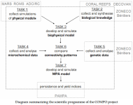
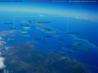

Doctoriales 2012 Josina
Doctoriales 2012 Marion
Doctoriales 2013 Josina
Canal IRD
Sciences au Sud 2014
Sciences au Sud 2015
|
 |  | |
|
Rapport IRD NC Doctoriales 2012 Josina Doctoriales 2012 Marion Doctoriales 2013 Josina Canal IRD Sciences au Sud 2014 Sciences au Sud 2015 |